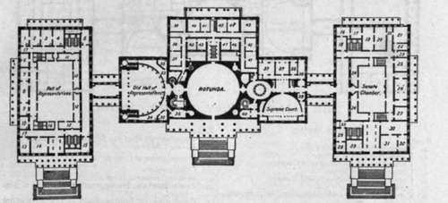
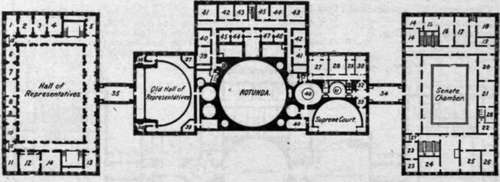

Appendix. Part 23
Description
This section is from the book "The National Capitol. Its Architecture Art And History", by George C. Hazelton, Jr. Also available from Amazon: The National Capitol Its Architecture Art and History.
Appendix. Part 23
32. Committee on Indian Affairs.
33. Stationery room.
The Principal Floor Of The Capitol
36. Restaurant.
37. Stationery room.
38. Committee on Public Lands.
39. Police Headquarters.
40. Committee on Immigration.
41. Committee on Territories. 4a. Ladies' room.
■t .-J. Janitor's room.
43. Committee on Agriculture.
44. Committee on Relations with Canada.
I Committee on Post-Offices and Post-Roads.
47. Senate Post-Office.
48. Committee on Printing.
49. Elevator.
51. Gentlemen's room.
Senate Committees. Terrace, North Side
A. Mines and Mining.
3. On Potomac River Front. 4, 6. Irrigation and Reclamation of Arid Lands.
5. On Coast Defenses.
9. Industrial Expositions. 11. Indian Depredations.
13. To Examine the Several Branches of the Civil Service.
Note.—Rooms occupied by Senate Committees on Transportation and Sale of Meat Products, and Five Civilized Tribes of Indians are not shown on the diagrams. They are located in the sub-basement, west front, on the Senate side of center building.
House Wing
A. V Appropriations.
4. Journal, printing and file clerks of the House.
5. Committee on Pensions.
6. Closets.
8. (Members' retiring room.
10. Speaker s room, la. Cloakrooms.
J. Committee on Ways and Means.
15. Committee on Military Affairs.
16. House Library.
17. Elevators.
37* Committee on Naval Affairs.
39. Committee on the District of Columbia.
40. Committee on Public Buildings and Grounds.
41. Committee on the Louisiana Purchase Centennial.
4s. Committee on Patents.
43. Committee on Expenditures in the Treasury Department.
Main Building
33. House document room.
34. Engrossing and enrolling clerks of the House.
35. Committee on Enrolled Bills.
36. Office of the Clerk of the House of Representatives. It was in this room, then occupied by the Speaker of the House, that ex-President John Quincy Adams died, two days after he fell at his seat in the House, February 13, 1848.
37. Office of he Clerk of the Supreme Court.
38. Robing room of the Judges of the Supreme Court.
39. Withdrawing room of the Supreme Court. »o. Office of the Marshal of the Supreme Court.
J*' Committee on Pensions.
43. Committee on Foreign Relations.
14. Committee on Pacific Islands and Porto Rico.
(5. Committee on Enrolled Bills.
J~ I Committee on Interoceanic Canals.
The Supreme Court, formerly the Senate Chamber.
The Old Hall of the House of Representatives is now used as a statuary hall, to which each State has been Invited to contribute two statues of its most distinguished citizens.
Senate Wing
16. Office of the Secretary of the Senate.
17. Executive clerk of the Senate.
18. Financial clerk of the Senate.
19. Chief Clerk of the Senate.
20. Engrossing and enrolling clerks of the Senate.
**' j- Committee on Appropriations.
23. Closets.
24. Cloakrooms.
25. Room of the President.
26. The Senators' reception room.
27. The Vice-President's room.
28. Committee on Finance.
29. Official Reporters of Debates.
31. Committee on the District of Columbia.
32. Office of the Sergeant-at-Arms of the Senate.
33. Elevator.
The Gallery Story Of The Capitol
34. Superintendent of the Senate documents.
35. House Library.
!• House document room.
38. Clerk's office.
40. Senate document room.
41. Committee on Transportation Routes to Seaboard.
42. Committee on Improvement of the Mississippi River and its Tributaries.
43. Committee on Private Land Claims.
44. Committee on Geological Survey.
45. Committee on Railroads.
46. I Committee on Organization, Conduct and Ex.
47. Penditures of "the Executive Departments.
Senate Wing
14. Committee on Public Buildings and Grounds.
Committee on Interstate Commerce. 17. Committee on Privileges and Elections, jj" j- Committee on Commerce.
20. Press associations: Western Union and Postal Telegraphs.
21. Newspaper Correspondents' room.
22. Ladies' room.
23. Committee on Naval Affairs.
24. Conference room of the minority.
25. Committee on Claims.
26. Committee on Engrossed Bills.
27. Elevator.
28. Correspondents' room.
House Wing
1. Committee on Elections No. 2.
2. Committee on Elections.
3. Committee on Banking and Currency.
4. Committee on Claims.
5. Committee on Railways and Canals.
6. Lobby.
7. Correspondents and journalists' withdrawing room.
9. Water-closet.
10. Ladies' retiring room.
11. Committee on the Public Lands.
12. Committee on Commerce.
13. Committee on Foreign Affairs.
14. Committee on the Judiciary.
15. Elevators.
39. Committee on Mileage.
40. Committee on Pacific Railroads.
41. Minority room.
*3- J- Committee on Coinage, Weights and Measures.
44. Committee on Expdt. in the State Department.
45. Committee on Expdt. in the War Department.
Main Building
27. Senate Library.
28. Senate Library—Librarian's room.
29. Senate Committee on Public Health and National Quarantine.
30. Senate Committee on Woman Suffrage.
32. >■ Senate document room.
Continue to: